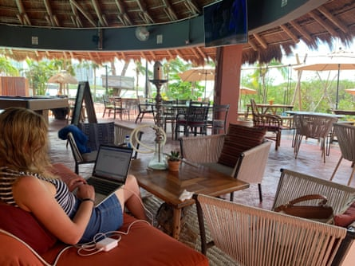
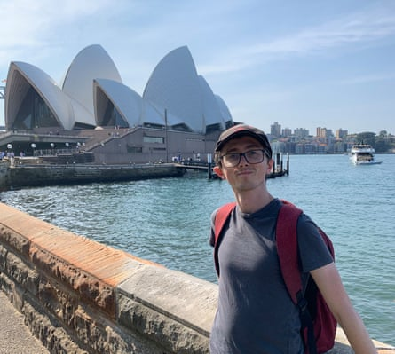
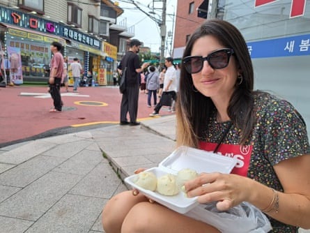
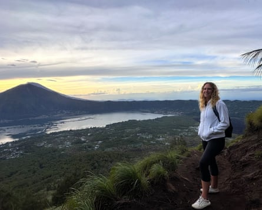

J ason, a 34-year-old American, is stumbling around the pool table, cue in hand. Five Saigon beers later, he will shuffle out, clamber on to a scooter and drive back to his beach hut. I know this because I’ve seen the same routine for the past four nights. Meanwhile, Eloise, 38, a French national, is gyrating on the dancefloor. Earlier, on the beach, she told me about her big bitcoin dreams – although she hasn’t got the funds she needs yet. Then there is Bex, a Briton in her late 50s whose eyes are large and wild because she has just popped a pill. She spends only a month a year in the UK – not because she wants to, she says, just to check in with family who are worried about her.
Here we are together on this paradise island in south-east Asia, laptops closed for the day. This is the digital nomad dream, isn’t it? This is what adventure and freedom looks like, right? We’re happy!
Or are we all just pretending?
The number of digital nomads – people who work remotely from no fixed location – has risen dramatically in the past few years. About 18.1 million American workers described themselves as digital nomads in 2024, an increase of 147% since 2019, according to the recruitment firm MBO Partners . The research firm Public First estimates that there are 165,000 British citizens working as digital nomads and that 7% of the adult population say they are very likely to live and work as a digital nomad in the next three years.

Bratt and her brother in Vũng Tàu, Vietnam
However, for some digital nomads, the shine may be wearing off. I know, because, until recently, I was one of them. In 2022, I went freelance in my job as a writer. The cost of living in the UK was rising and I could either pay about £1,000 a month for a flat (outside London) or pet-sit and live, for free, in other people’s homes while saving for a house deposit. It was a no-brainer.
I pet-sat in the UK and in sunnier climes, too. Flights were my biggest outgoing (when I wasn’t pet-sitting, I stayed with friends and family who lived abroad), but chasing the sun was still cheaper than paying rent and bills in the UK and it allowed me to save money. I knew a bit about living and working abroad, having not long returned from two years working in Japan and a year in Australia before that. So, I surmised, it would be absurd not to head to a beach bar in south-east Asia and work freelance from there.
Initially, I adored the lifestyle. I worked my own hours, usually during the day, for a handful of clients. Come evening, I would hop on the back of a scooter and drive through plumes of street-food smoke to meet new friends on the beach and sip from coconuts. It all felt wonderfully freeing.
But somewhere around the midway mark of my most recent six-month trip, something happened. A whisper of a thought began to emerge at the back of my mind. By the final month, it was a pervasive shriek: “What am I doing?”

‘The difficulty of it all exhausted me’ ... Corina at Machu Picchu, Peru
Corina, a former digital nomad from Australia, began to be haunted by the same question. As she was able to run her property business remotely, she had headed to South America. “I was exploring, meeting different people – it was great. I felt real freedom. But then, suddenly, I just started questioning whether what I was doing was what I really wanted.”
A seasoned traveller who has visited 40 countries, Corina doesn’t easily feel homesick. She describes the thrill of crossing into Venezuela, spending six months there and feeling “wild and free”. However, she says: “At some point, the difficulty of it all exhausted me. I just never knew what was coming. The hot water and power would stop at a random time each day. Taxi drivers relied on spoken directions and I only had elementary Spanish. And there was no currency. You had to pay for things either in cryptocurrency – using an app which only sometimes worked – or in US dollars, which required finding someone you trusted to trade with.”
For me, any memories of challenges I had faced would evaporate after a week back in overcast England. The thought of jetting off again was the only thing that lit a spark in me. But just as with any addiction, satisfying a craving for travel with more travel didn’t fix anything. I had the sense that I was avoidant rather than liberated.
I had conflated digital nomadism with holidaying. But it turned out that working in a cafe was still working in a cafe, whether you are in a Starbucks in Swindon or a beach bar in Bali. I found myself resenting having to work when there was so much to explore.
‘I questioned whether I was really doing what I wanted’ ... Corina working remotely in Mexico
Perversely, many digital nomads end up doing a global tour of Starbucks. “It was the one place with reliable wifi,” says Matt, 25, a fellow British writer and on-off nomad since 2019. “I hated that I was in there, but finding somewhere to work was always difficult.” He, too, was plagued by unsettling existential questions as he fulfilled his dream of travelling. “It started early on,” he says. “I got to my rented apartment in Kuala Lumpur, which had a rooftop pool, and I thought: ‘Wow, this is everything I’ve dreamed of!’ But the excitement wore off and I had this deep ache inside me. I thought I was just in the wrong place.”
At one point, Matt visited 12 countries in 90 days as part of a two-year trip. “At every new place I arrived at, I remember thinking: ‘What now?’ When I was young, I thought that success meant being able to travel the world. But I didn’t feel successful; I felt lonely and exhausted. I wanted to go and explore, but I just didn’t have the energy.”
According to one study from the University of Groningen in the Netherlands , permanently living a nomadic lifestyle could have “significant implications for an individual’s life course”, affecting employment opportunities as well as mental wellbeing. The study concluded that “digital nomads perceive their fast-travelling lifestyle as temporary phase in their lives” and that many will “eventually search for more stability and continuity”, either by settling back in their home countries or permanently migrating.
Caterina, a project manager from Italy, found the lifestyle started to affect her health. Working remotely for a tech startup in 2022, she and her partner spent stints in Europe, Asia and the US. “I hadn’t accounted for all the extra admin the lifestyle entailed,” she says. “We were always booking flights, finding accommodation and muddling through in other languages – all while juggling full-time jobs,” she says. “We started getting sick more frequently than normal and we could never fully recover because we weren’t in a comfortable environment. And then we’d be off on another trip.”
‘I didn’t have energy to explore’ ... Matt in Sydney, Australia
I recall a period of my travels in 2023 in Vietnam when a bout of tonsillitis was bookended by rounds of food poisoning – all in the same two months. I shivered and sweated my way from Ho Chi Minh to Vũng Tàu, on board a two-hour ferry, silently willing the journey to end. But I should confess: I was doing digital nomading lite. The ferry would drop me almost directly at my brother’s front door in Vũng Tàu, where he lived at the time. I could slide into the spare room bed and lock myself away, free of obligations.
Unlike Matt, who – barely out of school – set out alone for unfamiliar countries, I based myself in places where I already had connections, staying with or near friends for extended periods. For three months in Sydney, I recreated the expat life I had had there several years before: working during the day from my accommodation, swimming in the sea on my lunch break and meeting friends in the evenings and at weekends.
And yet my worries persisted. I was neither holidaying in Sydney, nor living there. I watched friends go about their days, following through on plans made before I arrived and making new ones for after I had gone. I was like a time traveller, temporarily injected into their world from another realm.
I began to suspect that much of digital nomad life was performative. In Bali, I had heard a man brag about his effortless passive income, before witnessing him looking stressed on a video call at 10pm. I watched a life coach who preached positivity on her travel vlog shout at a local waitress because her steak was overdone. And I winced at the number of 25-year-olds calling themselves entrepreneurs (although that might just be the Briton in me recoiling from American confidence).
The word “settle” had been anathema to me for so long. Then, one day in Sydney, I chatted with a local person at the Collaroy rock pool before spending the evening cackling with old friends over dinner – and I realised the city wasn’t the main determinant of my happiness. It was people and community – which I could find at home and enjoy without a cutoff point if I stayed in one place.
‘The lifestyle required so much admin’ ... Caterina in Seoul, South Korea
Gradually, the idea of having a space that was mine, neighbours to get to know, regular exercise classes to attend and a coffee shop where they knew my name felt exciting. I had once laughed in the face of routine; now, I knew it was crucial if I wanted to build a life worth living.
I knew coming home wouldn’t be easy. As the plane from Ho Chi Minh to London descended, I looked out over England’s patchwork fields and was unsure what I was returning to or for. Those first few months were spent flitting between my family home and more pet-sitting stays. Friends and family wanted to know “my plan” and I felt more diminished each time I told them I didn’t know. The reverse culture shock was acute. I discovered that people don’t ask about your travels because the experiences are too unrelatable. Plus, a relationship I had formed overseas, and was trying to maintain, was nosediving and it was hard to discuss it with friends, since they didn’t know the person or the context. I was disoriented, but also felt as if I had never been away.
I accepted a job that – although still remote – had stipulations on where I could be based. I signed a lease on a flat in Brighton, keeping me in one place for the next year at least. Some nomads, including me three years ago, might view this as incarceration, but I felt liberated.
Corina, knowing certain aspirations could be fulfilled only by being in one place, returned to Australia. But she took it one step further: for the first time in more than a decade, she got an office job. “Ironically, having a job has given me a break,” she says. “When I first returned, I spent two weeks visiting my sister in another city. Because I work for myself, I could do that. But while I was there, I was always taking calls and she told me I wasn’t present. And I started to wonder: when do I actually have my own time?”
‘I don’t regret a second of my travels’ … Bratt in Bali
Initially, Corina thought that returning to an office would be like “caging a wild beast”, but it has had an unexpectedly positive impact on her life. “Having to come into an office, I’m forced to be productive … I realised that I’m less efficient when I’m in charge of my own timetable: I stay up late and wake up late, procrastinate, berate myself for being lazy and then end up doing the thing I was supposed to do at 9am at 3am out of last-minute guilt. But now I have structure and, because I’ve only got short, set windows of time in which to get things done, I’m suddenly able to do them.”
After five years of on-off travel, a collapsed lung in Calgary was the final straw for Matt. “I was in hospital, I couldn’t breathe properly and I had no one,” he says. His travel insurance wouldn’t cover the cost of medical care and he had to use his savings to pay for treatment. “It was a total mess and I felt really isolated and lonely.” Matt made a full recovery, but returned to the UK and is enjoying spending time with family.
After four years of living in Airbnbs, Caterina tells me, with a mix of excitement and trepidation, that she and her partner have just signed a lease on a New York apartment, “although it took us a year to commit to signing”, she laughs.
None of us are ruling out travelling again. But we all agree that, for now, it’s time for some continuity and a mental reset – and to see what that brings. So far, it’s brought newfound joy for life’s little things. For Caterina, that is having quality, sharp kitchen knives. For Matt, it’s a library card. For me, it’s a membership to a swimming pool.
Like all the former digital nomads I’ve spoken to, I don’t regret a second of my travels. I am immensely grateful to have had an opportunity that many aren’t afforded – and I often felt that gratitude intensely as I looked on, in awe, at the foreign landscapes I found myself in.
And while I can’t hike up a Balinese volcano tomorrow morning to watch the sunrise, the sunrise looks pretty good from the pebbles of Brighton beach.